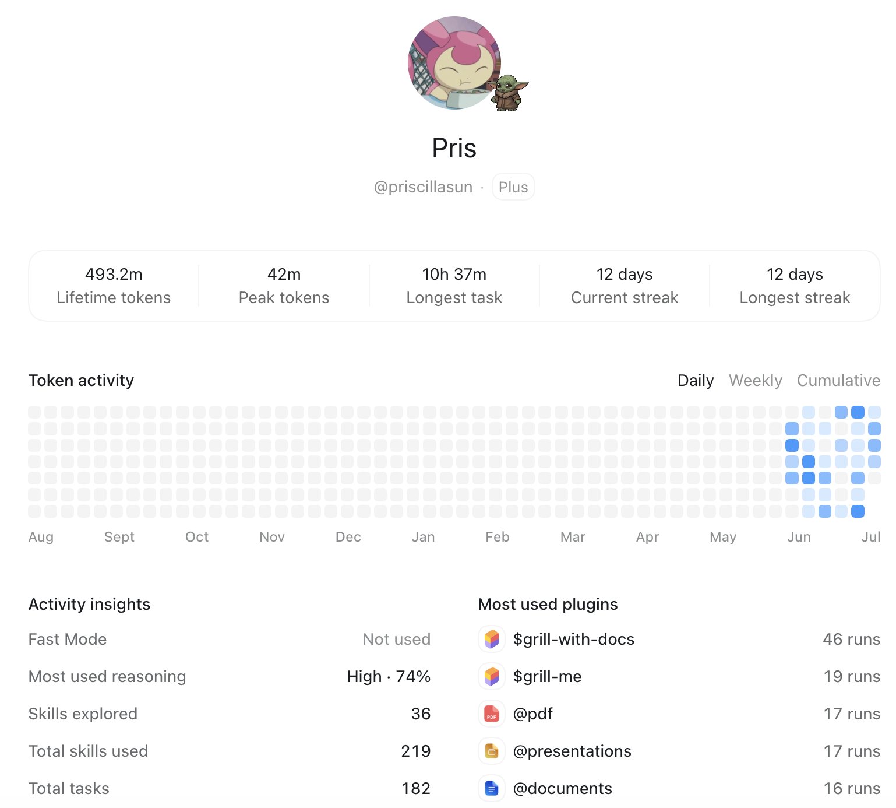

Codex is my
workbench.
The point of a profile is not a vanity metric. It shows a sustained practice: convert recurring tasks into skills, keep context in artifacts, and validate the final output instead of stopping at a plausible answer.
493.2mLifetime tokens
36Skills explored
219Total skills used
182Total tasks
